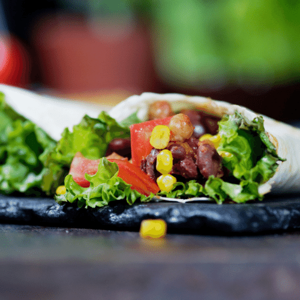

Veganer Burrito

Unten findet ihr ein Rezept für einen einfachen, schnellen und leckeren veganen Burrito. Die Mischung aus Reis, warmer Gemüsefüllung, Soja und Guacamole ist einfach köstlich. Perfekt für Abends nach der Arbeit oder auch am Wochenende. Schickt mir gerne Bilder von euren Burritos, solltet ihr das Rezept ausprobieren!
Für 4 Portionen
ZUTATEN
- 4 Tortillawraps
- 200g Reis
- 200g Sojagranulat oder Sojahack
- 1 große Zwiebel
- 1 rote Paprika
- 1 Dose Kidneybohnen
- 1 kleine Dose Mais
- Paprikapulver (edelsüß)
- 2 TL Chili con Carne Gewürz
- 1 Avocado
- 1 Knoblauchzehe
- 1 große Tomate
- ein paar Spritzer Limettensaft
- Salz & Pfeffer
ZUBEREITUNG
- Den Reis nach Packungsanleitung kochen.
- Das Sojagranulat mit 1 EL Gemüsebrühe in eine Schüssel oder einen Topf geben und mit kochendem Wasser übergießen. Etwa 10 Min. einweichen lassen, anschließend durch ein Sieb abgießen und so gut wie möglich ausdrücken. (Dieser Schritt entfällt, falls du fertiges Sojahack hast.)
- Die Tortillawraps im Backofen bei 100°C Umluft vorwärmen.
- Die Zwiebel schälen, fein würfeln und in der Pfanne in etwas Öl anbraten. Nach 3-4 Min. das Sojagranulat bzw. das Sojahck hinzugeben und mitbraten lassen. Die Paprika würfeln und ebenfalls in die Pfanne geben. Die Kidneybohnen zur Hälfte abgießen und mit der restlichen Flüssigkeit in die Pfanne geben. Alles gut miteinander vermengen und mit den Gewürzen sowie Salz und Pfeffer abschmecken. Zum Schluss den Mais (ohne Flüssigkeit) dazugeben.
- Das Fruchtfleisch der Avocado mit einem Esslöffel herausheben und entweder mit der fein gehackten Knoblauchzehe in einen Mixer geben oder beides in einem tiefen Teller mit einer Gabel zerdrücken und vermengen. Die Tomate würfeln und zur Guacamole hinzugeben. Zum Schluss mit ein paar Spritzern Limettensaft, Salz und Pfeffer abschmecken.
- Die Wraps aus dem Ofen holen, mit Reis, Pfannenhack und der Avocadocreme belegen und einrollen. Dazu die Wrap-Seiten von rechts und links zur Mitte klappen, das untere Ende hochklappen und möglichst fest zusammenrollen. Sollte die Wraps zu trocken sein und nicht zusammenhalten, einfach die Teigoberfläche mit etwas Wasser einreiben.
Back to Main